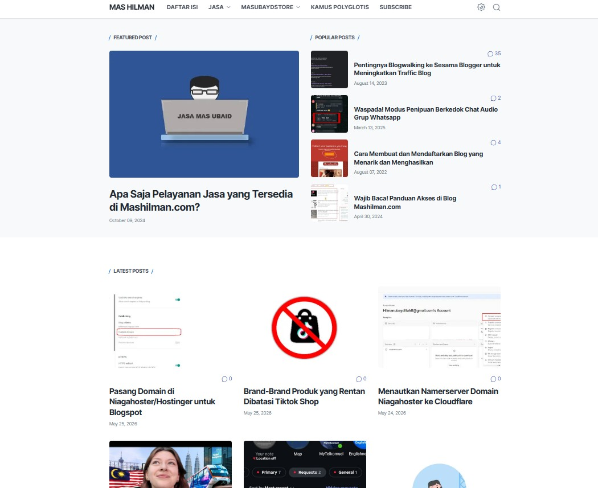
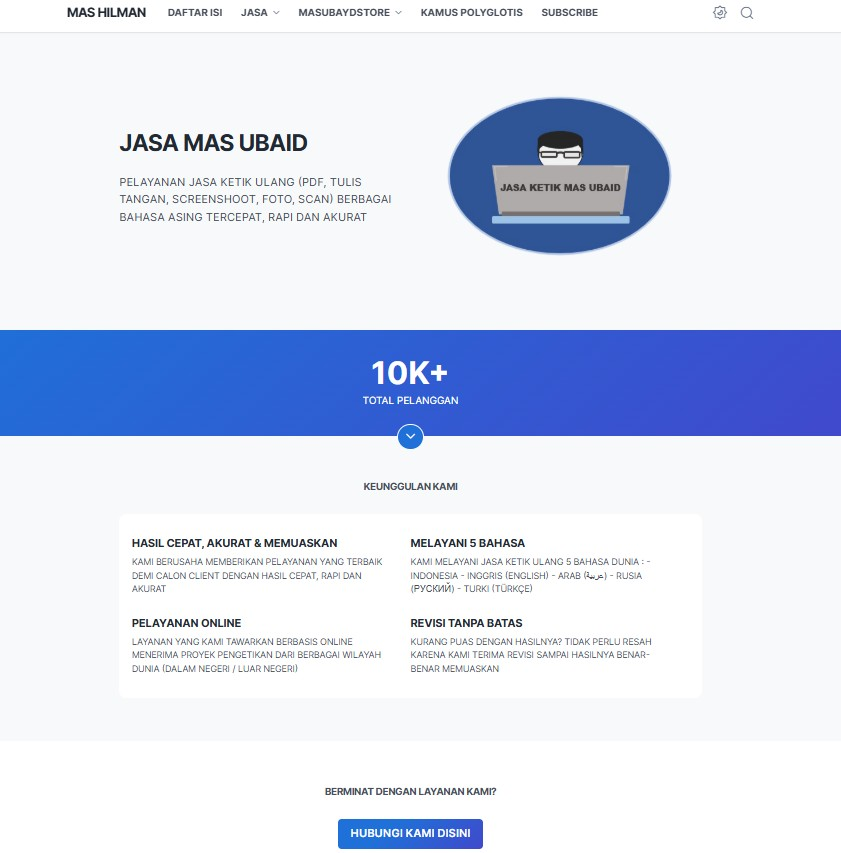

Memodifikasi template Blogger Litespot untuk optimasi SEO, perbaikan struktur heading, dan peningkatan kecepatan loading.

Blog pribadi yang saya kelola menggunakan Blogger. Fokus pada penulisan konten, SEO, dan optimasi performa website.


Landing page layanan jasa ketik ulang yang dibuat menggunakan Blogger. Halaman dirancang untuk menjelaskan layanan, menjawab pertanyaan pelanggan, dan mengarahkan pengunjung untuk menghubungi penyedia jasa.